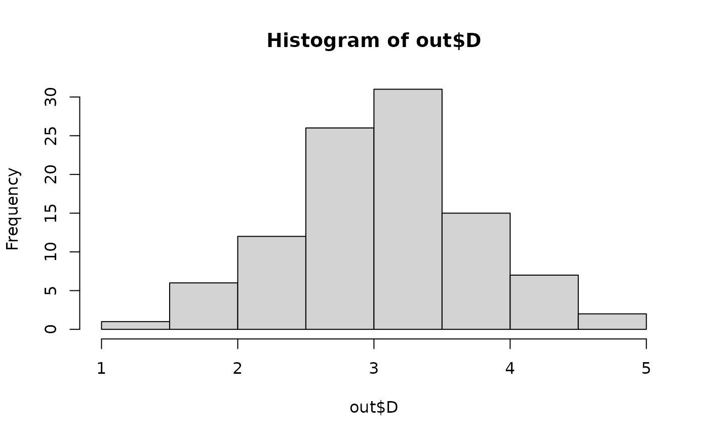
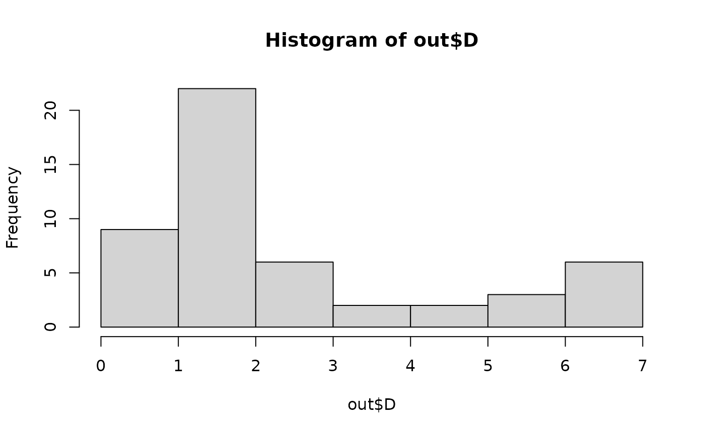

Dagnelie multinormality test
dagnelie.test.RdCompute Dagnelie test of multivariate normality on a data table of n objects (rows) and p variables (columns), with n > (p+1).
Value
A list containing the following results:
- Shapiro.Wilk
W statistic and p-value
- dim
dimensions of the data matrix, n and p
- rank
the rank of the covariance matrix
- D
Vector containing the Mahalanobis distances of the objects to the multivariate centroid
Details
Dagnelie's goodness-of-fit test of multivariate normality is applicable to
multivariate data. Mahalanobis generalized distances are computed between each object and the multivariate centroid of all objects. Dagnelie’s approach is that, for multinormal data, the generalized distances should be normally distributed. The function computes a Shapiro-Wilk test of normality of the Mahalanobis distances; this is our improvement of Dagnelie’s method.
The null hypothesis (H0) is that the data are multinormal, a situation where the Mahalanobis distances should be normally distributed. In that case, the test should not reject H0, subject to type I error at the selected significance level.
Numerical simulations by D. Borcard have shown that the test had correct levels of type I error for values of n between 3p and 8p, where n is the number of objects and p is the number of variables in the data
matrix (simulations with 1 <= p <= 100). Outside that range of n values, the results were too liberal, meaning that the test rejected too often the null hypothesis of normality. For p = 2, the simulations showed the test to be valid for 6 <= n <= 13 and too liberal outside that range. If H0 is not rejected in a situation where the test is too liberal, the result is trustworthy.
Calculation of the Mahalanobis distances requires that n > p+1 (actually, n > rank+1). With fewer objects (n), all points are at equal Mahalanobis distances from the centroid in the resulting space, which has min(rank,(n-1)) dimensions. For data matrices that happen to be collinear, the function uses ginv for inversion.
This test is not meant to be used with univariate data; in simulations, the type I error rate was higher than the 5% significance level for all values of n. Function shapiro.test should be used in that situation.
References
Dagnelie, P. 1975. L'analyse statistique a plusieurs variables.
Les Presses agronomiques de Gembloux, Gembloux, Belgium.
Legendre, P. and L. Legendre. 2012. Numerical ecology, 3rd English
edition. Elsevier Science BV, Amsterdam, The Netherlands.
Examples
# Example 1: 2 variables, n = 100
n <- 100; p <- 2
mat <- matrix(rnorm(n*p), n, p)
(out <- dagnelie.test(mat))
#> Warning: Test too liberal, n > 8*p
#> Warning: Test too liberal, p = 2, n > 13
#> $Shapiro.Wilk
#>
#> Shapiro-Wilk normality test
#>
#> data: D
#> W = 0.96791, p-value = 0.01533
#>
#>
#> $dim
#> n p
#> 100 2
#>
#> $rank
#> [1] 2
#>
#> $D
#> [1] 2.15648344 1.07504733 0.72103190 2.13447808 1.21774174 1.58273892
#> [7] 1.61406106 1.52020859 0.47152564 0.99077106 1.78072801 1.57769652
#> [13] 0.61386575 1.48201804 0.93396869 1.49710437 1.50194936 1.15378444
#> [19] 1.67174715 0.09824844 0.72579630 2.51736858 0.61191226 1.09798207
#> [25] 2.39440196 0.67995080 1.55503298 1.68729433 0.56096458 3.29014123
#> [31] 1.81492741 1.14305116 2.15725438 1.15958991 1.26540146 1.40731373
#> [37] 1.06706522 0.53691346 2.48953661 1.63256999 2.06666161 0.82852240
#> [43] 1.26420695 1.09296152 0.37602543 1.87040430 1.71155816 0.58019428
#> [49] 2.62100569 0.90116925 0.60812035 2.27530881 1.10611567 0.46386631
#> [55] 0.66551822 1.75498503 0.07464083 0.96369483 1.58620543 1.21600873
#> [61] 1.07272238 0.54614628 1.24352097 1.75551436 1.23377550 1.04563178
#> [67] 1.50322987 1.65273689 0.96873420 1.72511188 0.65959858 1.00365700
#> [73] 0.97585066 1.08389953 1.11938429 0.64827437 2.54558468 1.24535657
#> [79] 0.98956739 0.88208631 0.59568138 1.08186189 0.76301609 1.08285557
#> [85] 1.17284862 1.69628174 1.49610288 1.65479089 0.68343750 1.36063871
#> [91] 1.50157400 1.14221772 1.62034820 1.20015446 1.22086695 0.84179253
#> [97] 1.03778178 1.44883790 2.25545739 0.66030887
#>
# Example 2: 10 variables, n = 50
n <- 50; p <- 10
mat <- matrix(rnorm(n*p), n, p)
(out <- dagnelie.test(mat))
#> Warning: Test too liberal, n > 8*p
#> $Shapiro.Wilk
#>
#> Shapiro-Wilk normality test
#>
#> data: D
#> W = 0.9901, p-value = 0.9485
#>
#>
#> $dim
#> n p
#> 50 10
#>
#> $rank
#> [1] 10
#>
#> $D
#> [1] 3.175138 3.214052 3.830172 3.748667 3.054423 3.401336 2.079913 3.918242
#> [9] 2.417304 1.342589 4.039119 2.973928 2.691957 3.516290 3.285056 1.890081
#> [17] 2.895389 2.594269 4.057980 3.086313 4.116745 2.630842 1.817384 3.171430
#> [25] 2.454392 3.435060 4.360681 2.283461 3.937369 2.906543 3.662934 2.460965
#> [33] 2.314502 2.605195 2.774554 2.563329 3.352215 3.105595 2.022015 3.368970
#> [41] 2.659214 2.251002 2.574525 4.084913 2.809137 4.883178 2.662314 3.837503
#> [49] 2.286607 3.567808
#>
# Example 3: 10 variables, n = 100
n <- 100; p <- 10
mat <- matrix(rnorm(n*p), n, p)
(out <- dagnelie.test(mat))
#> Warning: Test too liberal, n > 8*p
#> $Shapiro.Wilk
#>
#> Shapiro-Wilk normality test
#>
#> data: D
#> W = 0.97645, p-value = 0.07005
#>
#>
#> $dim
#> n p
#> 100 10
#>
#> $rank
#> [1] 10
#>
#> $D
#> [1] 2.650914 3.284081 1.644936 2.508548 4.300339 3.255159 2.160959 4.040763
#> [9] 2.992639 3.744103 4.416964 2.745967 2.990871 3.030109 4.094332 3.856567
#> [17] 3.847792 3.531352 2.337403 2.788339 3.112287 2.531552 2.680406 2.603916
#> [25] 2.588833 2.993766 2.876148 2.645793 3.522526 4.032233 4.033472 2.903951
#> [33] 2.785625 3.964832 4.709770 2.456015 4.276636 3.268340 2.522885 3.652706
#> [41] 2.896020 1.748376 3.582336 2.766604 1.726753 2.701301 2.646352 2.452263
#> [49] 3.954588 2.954240 3.523772 2.527782 3.280967 4.270286 4.065798 2.570505
#> [57] 3.048779 2.724178 3.124054 2.479204 3.639908 2.813632 2.716130 2.879536
#> [65] 4.070707 2.658535 3.629423 3.498105 3.587218 2.506704 2.898188 3.572588
#> [73] 4.344159 2.308459 2.974416 2.390474 1.947670 3.109190 2.790321 3.035131
#> [81] 3.877166 2.640960 4.016363 1.305186 2.061868 2.821192 2.988458 2.779263
#> [89] 2.736006 3.293422 1.877538 4.143710 1.984321 2.239363 3.436001 3.492056
#> [97] 4.076113 2.755594 2.631441 2.768345
#>
# Plot a histogram of the Mahalanobis distances
hist(out$D)

# Example 4: 10 lognormal random variables, n = 50
n <- 50; p <- 10
mat <- matrix(round(exp(rnorm((n*p), mean = 0, sd = 2.5))), n, p)
(out <- dagnelie.test(mat))
#> Warning: Test too liberal, n > 8*p
#> $Shapiro.Wilk
#>
#> Shapiro-Wilk normality test
#>
#> data: D
#> W = 0.7539, p-value = 8.837e-08
#>
#>
#> $dim
#> n p
#> 50 10
#>
#> $rank
#> [1] 10
#>
#> $D
#> [1] 1.3350856 5.8019840 3.1381800 0.9044139 0.9332940 6.0990914 2.4680538
#> [8] 1.0149730 5.1496363 0.8176754 0.9225233 4.5841008 0.9364412 5.6297536
#> [15] 0.9203301 2.2426227 0.9602350 0.9774925 1.7088109 2.3613129 5.2586292
#> [22] 0.9180964 4.7689106 0.9147675 6.2788440 1.1549768 6.8474090 0.9377546
#> [29] 1.0285858 0.9703467 0.8807920 3.3552973 0.7891075 1.0000100 3.8762673
#> [36] 0.9045229 0.8958101 0.9177053 1.4849644 0.9130843 1.6526588 0.9621061
#> [43] 6.8198350 1.4775620 1.0363605 0.9447500 3.6539894 6.9098259 1.2176620
#> [50] 2.6728413
#>
# Plot a histogram of the Mahalanobis distances
hist(out$D)
